Discover Morocco through its most powerful storyteller, its cuisine.
About this tour
Discover Morocco through its most powerful storyteller, its cuisine. From ancient medinas scented with saffron to coastal grills crackling with fresh fish, our Morocco Food Tours take you deep into the country’s flavors, people, and hidden culinary secrets.
Join local experts as they open doors to family kitchens, traditional bakeries, buzzing street-food alleys, and colorful markets where every spice tells a story.
Introduction to Morocco’s culinary culture
Morocco is a paradise for food lovers, a place where Amazigh traditions blend with Arab, Andalusian, Jewish, and Saharan influences to create one of the world’s richest culinary identities. The cuisine is slow-cooked, layered with spices, deeply aromatic, and tied to centuries-old techniques that vary from city to city.
Our food tours are designed to immerse you in this vibrant culture. You’ll explore lively medinas, meet passionate artisans, taste dishes you won’t easily find in restaurants, and understand the stories that shaped Morocco’s iconic flavors.
Every bite becomes a journey into history, hospitality, and the soul of Morocco.
What to expect on the tour
Small groups or private experiences
Easy walking pace through medinas and markets
Morning, afternoon, and evening departures
8–12 tasting stops depending on the city
Allergy- and vegetarian-friendly adjustments
Friendly guides who share stories, history, and humor
Photos taken at colorful, authentic spots
Optional cooking classes or extended cultural activities
Why choose our Morocco food tours
Experience the heart of Moroccan cuisine with local expert guides who know every hidden alley, bakery, and spice market. Enjoy authentic tastings at hand-picked stops, meeting bakers, spice masters, artisans, and families who preserve culinary traditions, all while feeling safe with vendors carefully selected for hygiene and quality. Whether in a small group or on a private tour, every journey is personalized, with options to include cooking classes, tea workshops, market visits, or other cultural experiences for a truly immersive adventure.
Morocco food tours by destination
Marrakech
Marrakech Food Tour
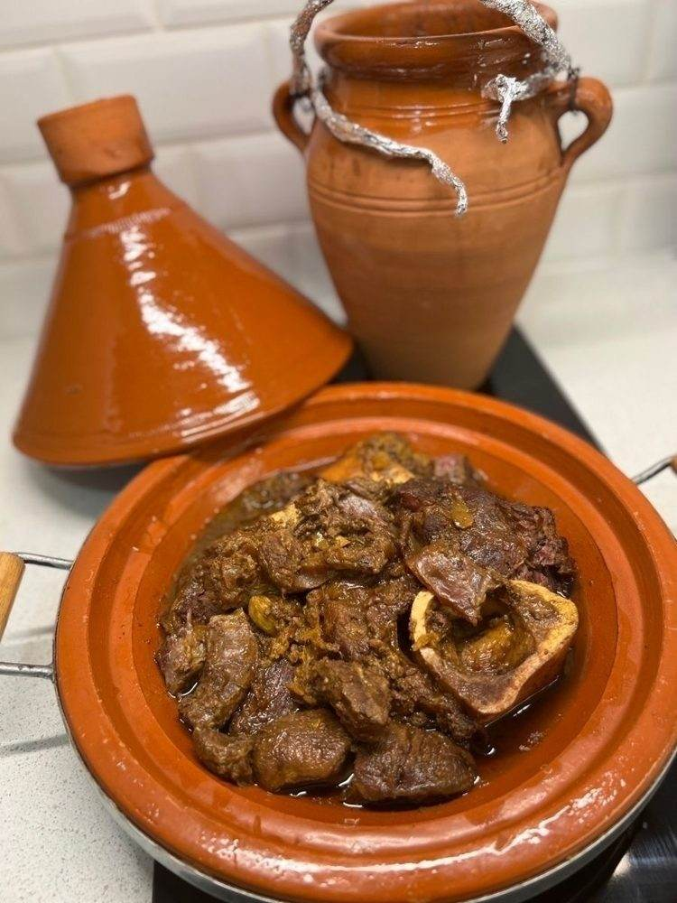
Step into Marrakech’s magical Medina, where lantern-lit alleys glow with the scent of cumin, saffron, and grilled meats. Your tour includes iconic flavors such as Tangia, M’semmen, Harira, and traditional pastries fresh from family bakeries.
You’ll wander through spice markets, visit ancient ovens still shared by entire neighborhoods, and experience the electric atmosphere of Jemaa el-Fna’s legendary food corners.
Optional add-ons include a Tangia cooking class or a Moroccan tea ceremony with a local host.
Fes is the historic heart of Moroccan gastronomy. Inside its labyrinthine medina, the oldest in the world, you’ll taste dishes that trace their origins back centuries.
Enjoy specialties such as Bissara, briouates, honey variations from ancient souks, and slow-cooked meats prepared in wood-fired ovens. Explore craft quarters, visit traditional bakeries hidden behind thick cedar doors, and learn why Fassi cuisine is considered Morocco’s most refined.
Casablanca blends modern tastes with deep Moroccan roots. This tour reveals the city’s cosmopolitan culinary scene, from vibrant seafood shacks to traditional markets full of color and life.
Taste grilled sardines, Moroccan sandwiches, fresh seafood from the Atlantic, and sweet treats from the historic Habous district. Explore the Old Medina and the stylish Corniche while discovering Casablanca’s unique coastal identity.
A crossroads of Africa and Europe, Tangier offers a culinary fusion unlike any other Moroccan city. Enjoy Mediterranean flavors, Rif mountain specialties, and Spanish influences woven into local dishes.
Taste grilled fish, kefta tagines, olives, soups, and mint tea served in traditional cafés overlooking the sea. Wander through the Grand Socco, the Kasbah, and bustling seaside food stalls that celebrate Tangier’s multicultural spirit.
Agadir’s cuisine celebrates the Amazigh heritage of the Souss region and the abundance of the Atlantic coast. This food journey takes you through lively markets and fishing areas where freshness defines every bite.
Enjoy Amlou, argan-infused dishes, seafood grilled on the spot, and traditional tagines prepared with local vegetables and herbs. Visit Souk El Had, the fishing port, and cooperatives producing authentic argan oil.
No culinary journey in Morocco is complete without tasting the food of its desert communities. In the Sahara, meals are slow-cooked under the stars, prepared with love and simplicity.
You’ll taste sand-baked bread, nomadic tea, Berber pizza (Medfouna), and traditional tagines cooked over wood fires. Connect with nomadic families, learn desert cooking techniques, and experience a magical dinner surrounded by dunes and silence.
Tender, slow-roasted lamb cooked over hot coals or in an underground pit, seasoned simply to highlight its natural richness and melt-in-the-mouth texture.
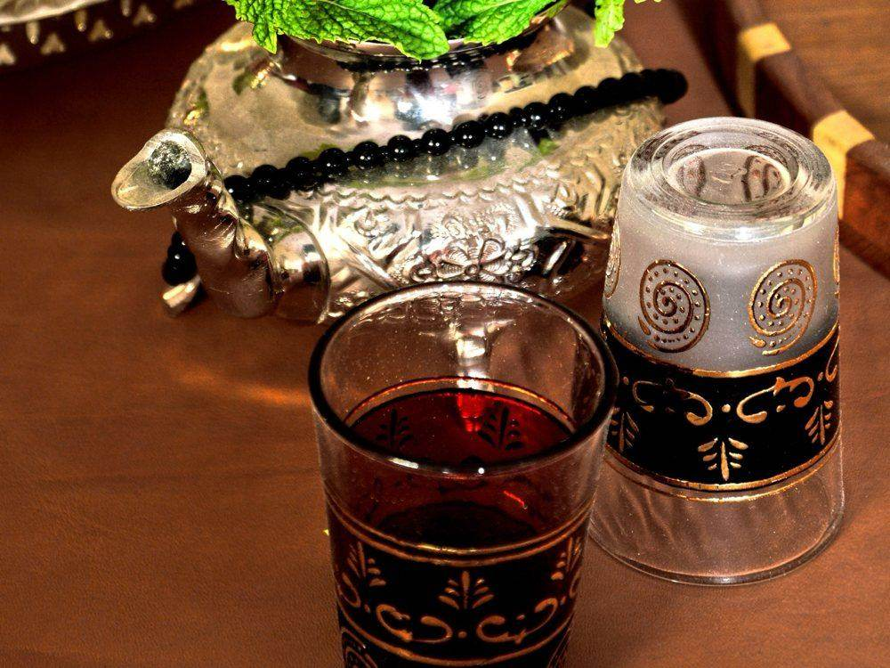
Moroccan Tea
A warm and aromatic blend of green tea and fresh mint, sweetened generously and poured from height for a light, frothy finish, a true symbol of Moroccan hospitality and daily life.
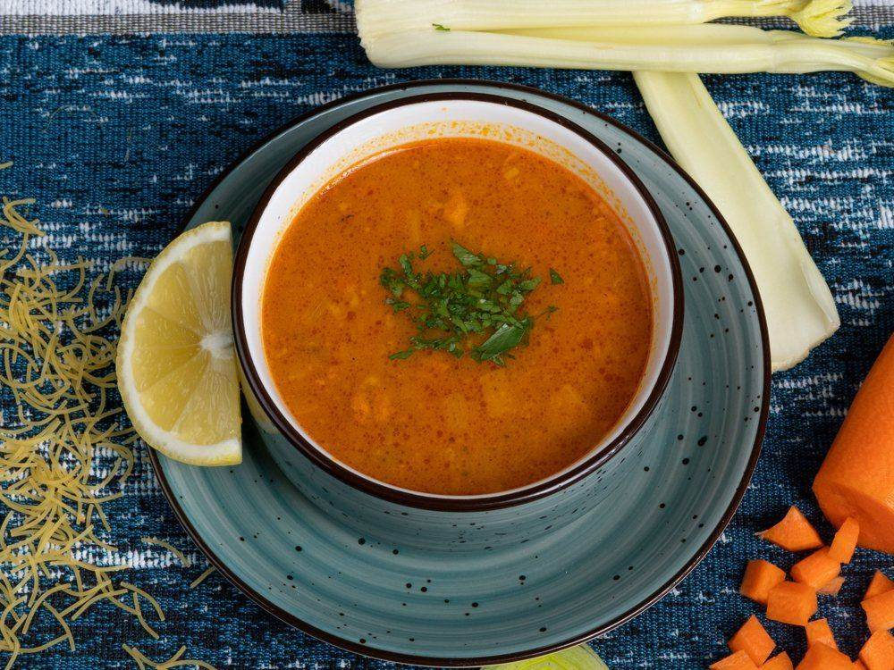
Moroccan Harira
Moroccan Harira is a traditional, hearty soup made with tomatoes, lentils, chickpeas, fresh herbs, and tender pieces of meat, often flavored with cinnamon, ginger, and saffron. It’s a beloved dish, especially during Ramadan, served to break the fast.
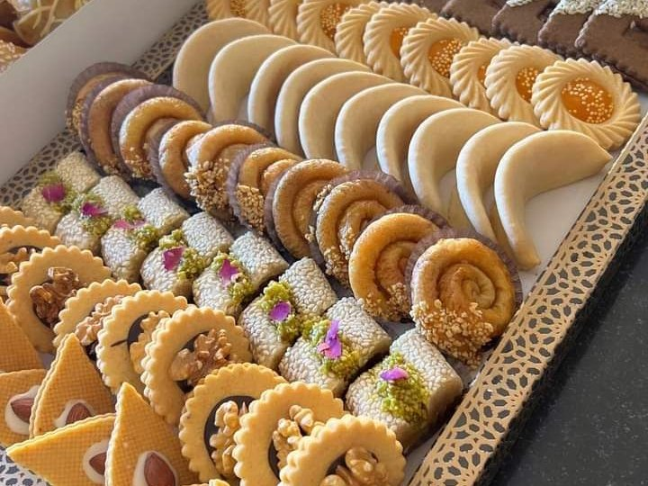
Moroccan Desserts
A delightful variety of sweet treats made with honey, almonds, orange blossom water, and delicate pastry. Rich in flavor and tradition, Moroccan desserts perfectly accompany mint tea and reflect the country’s warm hospitality.
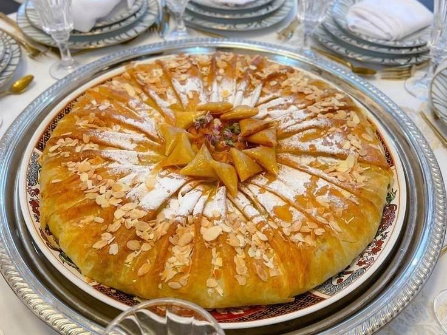
Moroccan Pastilla
A delicate, flaky pastry that blends sweet and savory flavors, traditionally filled with spiced chicken or seafood, almonds, and cinnamon, all wrapped in thin layers of dough and lightly dusted with sugar.
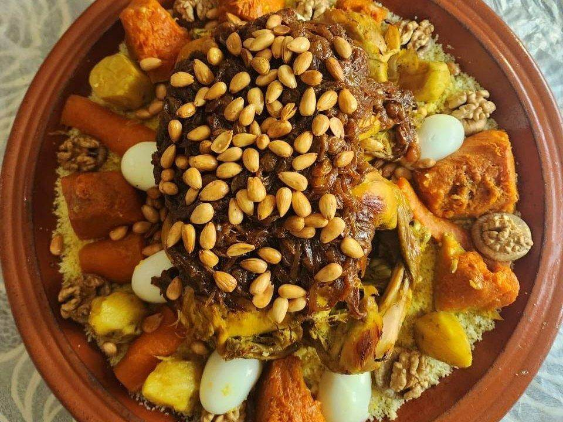
Moroccan Couscous
A light and fluffy semolina dish steamed to perfection and served with tender vegetables, aromatic spices, and slow-cooked meat or chickpeas, a warm, comforting staple of Moroccan cuisine.
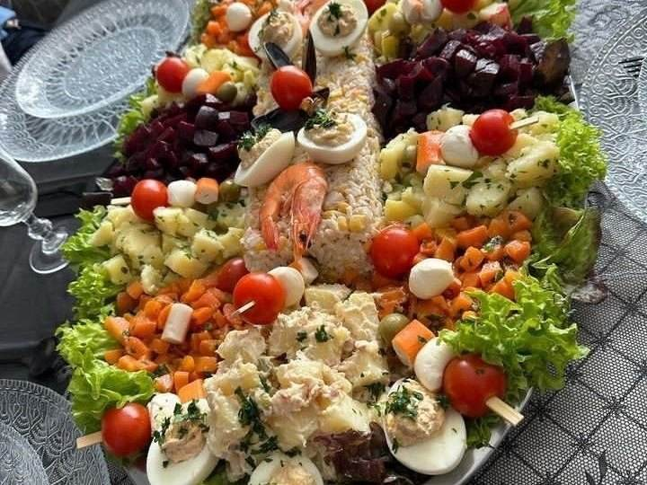
Moroccan Salad
Moroccan Salad is a fresh and vibrant mix of seasonal vegetables, often including tomatoes, cucumbers, peppers, and carrots, dressed with olive oil, lemon juice, and traditional spices. It’s a light, colorful, and flavorful starter or side dish.
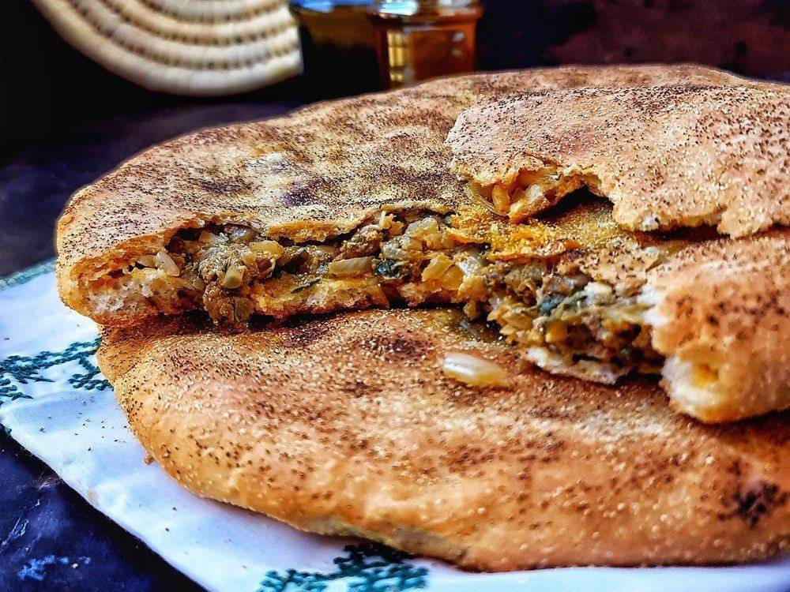
Moroccan Madfouna
Moroccan Madfouna is a savory “stuffed bread” from the Atlas region, filled with a mixture of spiced meat, onions, herbs, and sometimes vegetables, then baked to golden perfection. It’s a comforting and flavorful traditional dish.
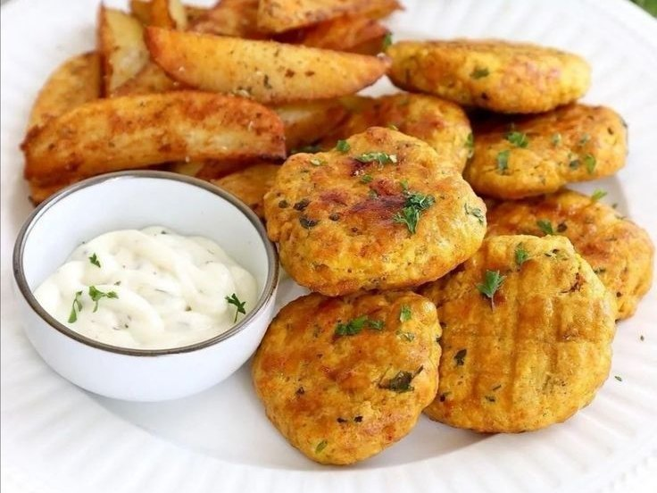
Maakouda
Moroccan Maakouda is a crispy, golden potato patty seasoned with garlic, cumin, and parsley, often served as a snack, side dish, or street food treat. It’s crunchy on the outside and soft on the inside.
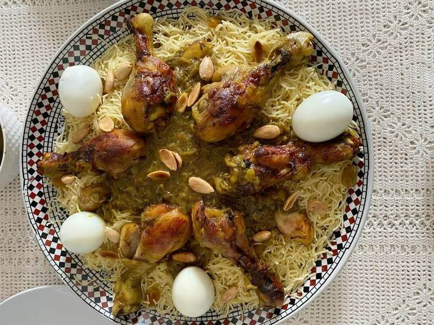
Moroccan Saffa
Moroccan Saffa is a traditional sweet and savory dish made with steamed vermicelli or couscous, layered with tender chicken or meat, caramelized onions, almonds, and a fragrant blend of cinnamon, saffron, and sugar. It’s often served at special occasions and festive gatherings.
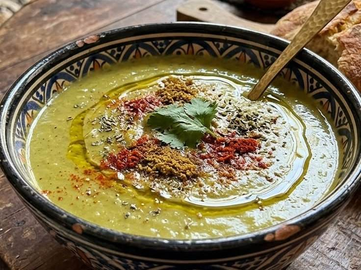
Moroccan Bissara
Moroccan Bissara is a hearty and creamy fava bean soup, flavored with olive oil, garlic, cumin, and paprika. It’s a popular comfort food, especially in winter, often enjoyed with warm bread.
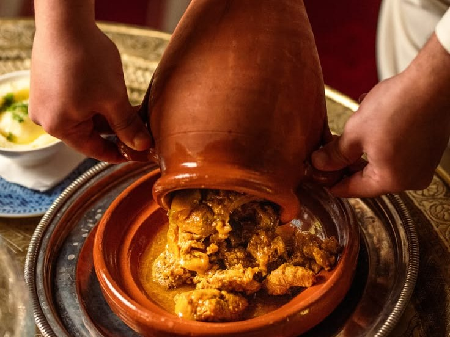
Moroccan Tangia
Moroccan Tangia is a slow-cooked meat dish, typically made with beef or lamb, preserved lemons, garlic, and a blend of aromatic spices, traditionally prepared in an urn-shaped clay pot called a tangia. It’s a rich, tender, and deeply flavorful specialty of Marrakech.
Frequently asked questions about Morocco food tours
What is included in a Morocco food tour?
Most tours include visits to local markets, street food tastings, traditional Moroccan meals, and sometimes cooking classes. Guided tours often feature insights into local culinary traditions and culture.
Are the tours suitable for vegetarians or people with dietary restrictions?
Yes! Many tours can accommodate dietary needs such as vegetarian, vegan, halal, or gluten-free. It’s best to inform the tour operator when booking.
How long does a typical food tour last?
Tours vary in length. Most city-based tours last between 3–5 hours, while full-day culinary adventures can last up to 8 hours or more.
Do I need to book in advance?
Booking in advance is highly recommended, especially during peak tourist seasons, to secure your preferred date and guide.
Are the tours safe for travelers?
Absolutely. Reputable food tours carefully select clean and trusted food vendors. Guides often ensure safety and hygiene throughout the tour.
Will I get to try traditional Moroccan drinks?
Yes, most tours include traditional beverages like Moroccan mint tea, fresh fruit juices, and sometimes local coffee specialties.
Is tipping expected?
Tipping is appreciated but not mandatory. For guides, a tip of around 10–15% of the tour cost is standard if you enjoyed the experience.
Can children join the tours?
Yes, many tours are family-friendly. Some activities or tastings may be adjusted for younger children.
What should I wear or bring?
Comfortable shoes for walking, a hat, sunscreen, and a small bottle of water are recommended. Dress modestly, especially when visiting traditional areas.
How do I choose the right tour for me?
Consider your interests: street food, traditional meals, or hands-on cooking experiences. Check reviews and see if the tour offers small groups for a more personalized experience.
Are private tours available?
Yes. Private tours provide a personalized experience with flexible schedules and often include visits to hidden culinary gems.
Can I learn to cook Moroccan dishes during the tour?
Many tours offer cooking classes where you can learn to prepare dishes like tagine, couscous, or Moroccan pastries under the guidance of local chefs.
Experience authentic Moroccan cuisine with local experts
Step into the vibrant world of Moroccan cuisine and let your taste buds travel through bustling markets, aromatic spices, and time-honored recipes. From sizzling street food to traditional tagines and sweet pastries, our guided food tours offer an unforgettable journey into the heart of Morocco’s flavors. Join us to taste, explore, and experience the country like a local. Every bite tells a story. Book your culinary adventure today and make memories that are as rich as the dishes you’ll savor!